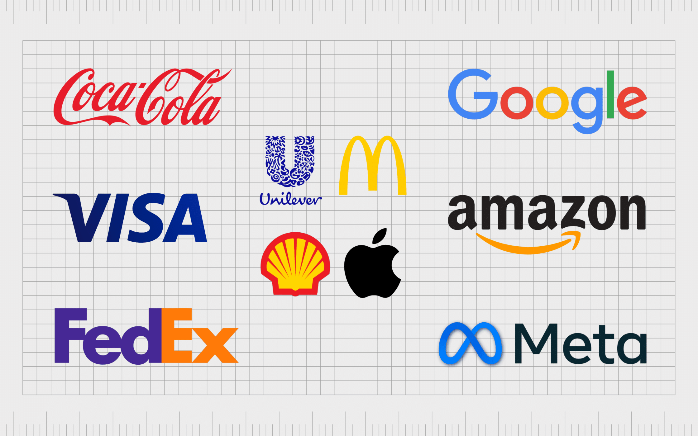
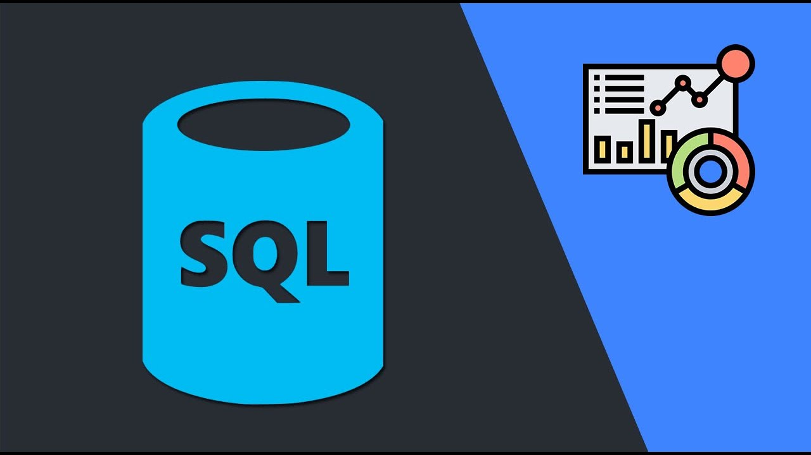
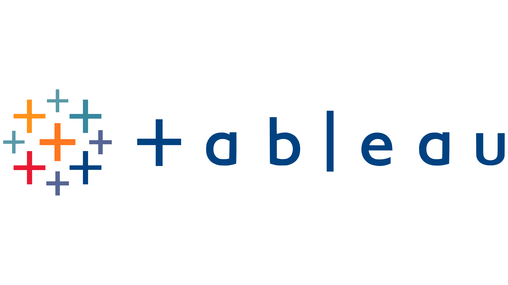
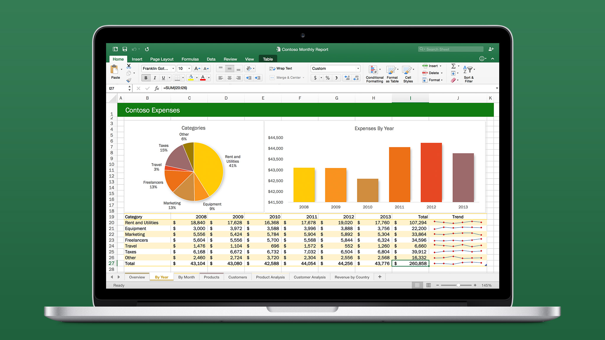

In this project, I transformed raw data into a clean, structured dataset by removing duplicates, standardizing values,
handling missing data, and optimizing data structures to make it more reliable and ready for analysis.


This project involves analyzing data on mass employee layoffs across various companies and countries from 2020 to 2023.
The goal was to explore trends and patterns in layoffs by analyzing different factors such as company, country, industry, time, etc.
SQL queries were used to aggregate and filter the data, and the project provides insights into key trends and insights based on the findings.

A collection of data visualization projects showcasing my ability to transform complex datasets into clear, actionable insights.
These interactive dashboards highlight trends, patterns, and key business metrics across various industries.

A collection of interactive Power BI projects designed to uncover meaningful insights from data.
These dashboards present key metrics and trends in a structured, visually compelling way, supporting data-driven decision-making.

A data analysis project in Excel involving data cleaning, transformation, and insights extraction. The project includes an interactive dashboard that visualizes key findings, making complex data more accessible for decision-making.